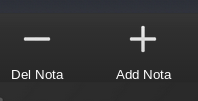

Ajuda
- Usando passo-a-passo:
- A tela inicial contém as entradas iniciais dos cálculos:
- Média mínima: média mínima usada para o calculo da média aritmética e pondera. Deve ser um valor positivo.
- Qtd. de notas: quantidade de notas para do semestre, bimestre ou etc. A quantidade notas mínimas suportadas é 2 e o máximo 8.
- Depois de inserir as informações clique em avançar no botão ou na barra inferior.
- Formulário de notas e pesos: neste formulário deve-se inserir as notas para o cálculo e os respectivos pesos, no mínimo uma nota é exigida para o cálculo, e os pesos padrões de todas as notas é 1, caso o valor não seja preenchido.
- Para adicionar ou remover notas do fomulário, clique no botão Add Nota ou Del Nota, que adicionam ou deletam o campo da última nota do formulário:

- Depois de inserir as notas clique em calcular para avançar e ver o resultado.
- Na tela de resultado, é exibida as notas inseridas, as possíveis notas necessárias para a provação, a medía ponderada parcial ou completa, a média aritimética parcial ou completa e a situação do usuário:
- Crusando sem risco de reprovação
- Aprovado
- Em reprovação
- Reprovado
O calculo da situação é feito a partir da média mínima e o valor das notas inseridas.
Calculando Notas Necessárias
- Para calcular as próximas notas necessárias basta adicionar no formulário o número total de notas do semestre, bimestre ou etc. E de acordo com a média mínima, o valor mínimo que precisará ser alcançado nas próximas avaliações é mostrado na página de resultado.
- No mínimo uma nota é necessária para o cálculo, além da média mínima solicitada inicialmente.